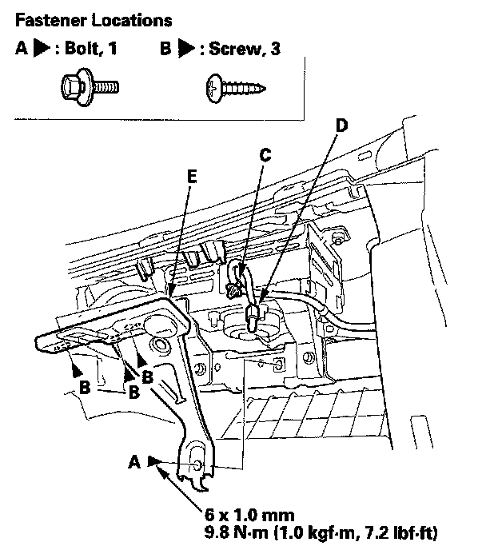

Glove Compartment Lock: Service and Repair
Glove Box Striker ReplacementSRS components are located in this area. Review the SRS component locations and the precautions and procedures before doing repairs or service.
NOTE: Take care not to scratch the dashboard and its related parts.
1. Remove the glove box.

2. Remove the bolts (A) and screws (B), disconnect the glove box light bulb socket (C), and detach the harness clip (D), then remove the glove box striker (E).
3. Install the striker in the reverse order of removal. Make sure the glove box light bulb socket is connected securely.